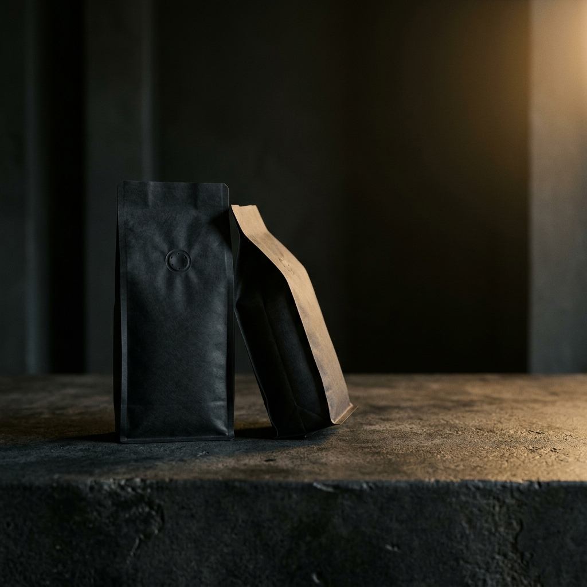

Intenso
Volcánico
Cacao amargo · Tabaco · Cuerpo denso
Notas de cacao amargo y tabaco. Cuerpo denso, final prolongado. Para los que toman el café en serio.
Café de especialidad tostado a mano en Buenos Aires
Seleccionamos granos en fincas de altura de Colombia, Etiopía y Brasil. Tostamos en lotes pequeños, sin apuro, para que cada blend tenga carácter propio. No hacemos café para todos — hacemos café para los que notan la diferencia.




Cacao amargo · Tabaco · Cuerpo denso
Notas de cacao amargo y tabaco. Cuerpo denso, final prolongado. Para los que toman el café en serio.
Floral · Cítrico · Acidez brillante
Floral, cítrico, con acidez brillante. Un perfil limpio que se disfruta sin azúcar.
Caramelo · Nuez · Toque ahumado
Caramelo, nuez y un toque ahumado. Suave pero con presencia. Ideal para cerrar el día.